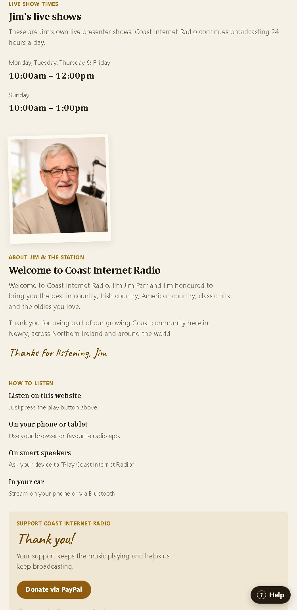

Overview
Coast Internet Radio is a live online radio station website for a real station and a real audience. This was not coursework or a made-up brief. I built and improved the site so listeners could reach the stream, station information and support links more easily.

The problem
The station needed a cleaner listener experience that worked better across mobile and desktop. The site also needed clearer structure, easier access to the stream, better usability and improvements based on real feedback from use.
My role
I handled the practical website work: planning improvements, updating the structure, making the layout respond properly across devices, checking usability and refining the listener journey. I also spent time testing, debugging and making sure the site felt easier to use in practice.
What I worked on
- Site layout and structure
- Mobile responsiveness and small-screen behaviour
- Accessibility and usability improvements
- Listener-focused improvements around live radio access
- Content/admin update controls
- Testing across devices and fixing practical issues
- Visual polish and performance checks

Challenges
The main challenge was building for real people rather than for a neat classroom brief. Small details mattered: mobile spacing, button clarity, stream behaviour, visual contrast and wording that made sense to listeners who were not technical.
What I learned
This project helped me understand that a useful website is not just about making it look good. It needs to work clearly, load quickly, respond well on different devices and stay understandable for real users.
What I would improve next
I would keep refining listener help content, continue testing across devices and browsers, and keep improving how station updates can be managed over time without making the site complicated.